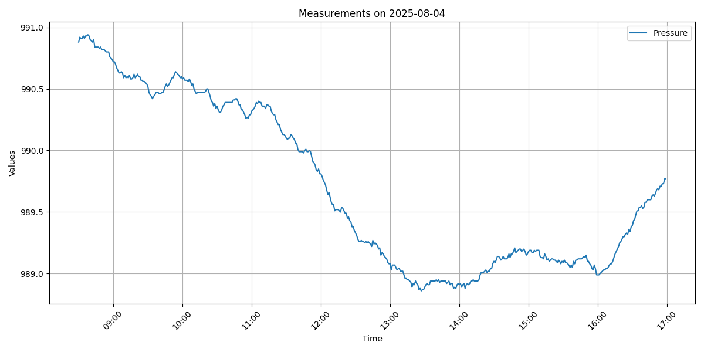

システムの外観
暑さ指数計測システム
M5Stack社 のM5Stack gray
と温湿度センサーユニットで、暑さ指数(WBGT)を記録するシステムを作成した。
温湿度の測定は、すでにArduino-IDE(C++)やPythonなどで開発された多くのサンプルや事例が公開されている。
今回、なぜ、この様なシステムを作成したのか？
理由は以下のとおりである。
結論としては、M5Stack では、tinygoでサポートされていない機能等や制約があった。それを補完するため、Raspberry Piを併用して必要最低限の機能を実装することができた。
システムの外観
M5Stack+温湿度センサーを制御し、一定時間毎に温度、湿度、気圧を測定するシステムをtinygoで開発した。
測定結果から、暑さ指数(WBGT)、不快指数(THI)を算出して、一定時間毎に結果をシリアルに出力する。また、液晶の表示を更新を行う。
WBGT_watcher へ
Raspberry
Pi 3 Model
B上で動作するロギング用のアプリ機能は、シリアルポートを監視し、WBGT_watcherから送られてくる測定データを受取る。
そのデータに、受信した日時を加えて、CSVファイルとして保存するだけの単純なものである。
開発にはGo言語を使用した。
serial_logger へ
今回、開発したシステムで、Raspberry Pi
のcronを設定し、測定ユニットから送られてくる温湿度等をcsv形式で記録した。
以下は、その収集データをpythonで加工し、グラフ化したものである。
このグラブ描画スクリプトは、以下のディレクトリで公開している。
plot

気圧変化
このシステムで、1週間ほど運用しているが、現在のところ、安定して運用できている。
最初は、M5Stack＋温湿度センサーだけで、システムを構築できると考えて開発を始めた。 しかし、以下のような問題があったので、これらの足りない機能を補うためにRaspberry Piを併用してシステムを実装することになった。
tinygoは、まだ、発展途上なので、これらも問題も徐々に改善されていくと思われる。
今後公開されるtinygoの新しい機能をこのシステムに取り込みながら、改良を続けていく予定である。
お粗末なコードではあるが、MIT License と BEER-WAREのデュアルライセンスとして配布する。
BEER-WAREとは、Poul-Henning Kamp 氏が提唱したライセンスである。
akio@triring.net wrote this file. As long as you retain this notice you can do whatever you want with this stuff. If we meet some day, and you think this stuff is worth it, you can buy me a beer in return. Copyright (c) 2025 Akio MIWA @triring
このファイルは、akio@triring.net
が書きました。あなたがこの条文を載せている限り、あなたはソフトウェアをどのようにでも扱うことができます。
もし、いつか私達が出会った時、あなたがこのソフトに価値があると感じたなら、見返りとして私にビールを奢ることができます。
Copyright (c) 2025 Akio MIWA @triring

{kind=link}
{kind=link}
{kind=link}